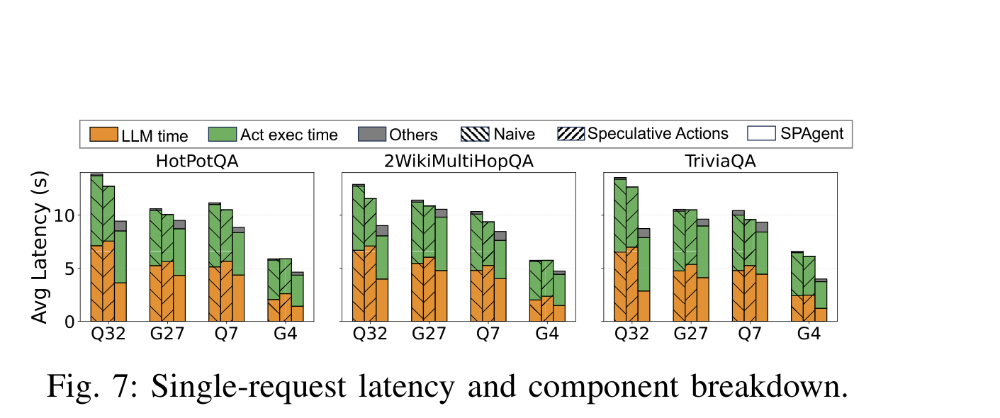

Single-request latency breakdown / 单请求时延拆解
Another paper also separates
另一篇工作也把 LLM 与动作执行拆开，说明工具执行不是边角成本。
LLM time and Act exec time, showing action execution remains a major component.另一篇工作也把 LLM 与动作执行拆开，说明工具执行不是边角成本。
Source: SPAgent, Huang et al., 2025, Figure 7